27.06.2026 · 01:40 · Argentina
My Moonlight ♡
Tres meses pueden parecer poco tiempo para algunas personas. Pero para mí, estos tres meses son una fantasía hecha realidad. Así que... hice esto para ti.
✦ Feliz 3 meses, Joshy ✦
Birds of a Feather · opcional♡ Abre solo cuando... ♡
Puedes abrirlas en cualquier orden. Es tuyo, tonoto .
🌧️
...estés triste
Para esos días en los que necesitas un poquito de cariño.
🫂
...necesites un abrazo
Uno de esos abrazos que no puedo darte IRL.
🌙
...no puedas dormir
Para hacerte compañía un ratito durante la noche.
💭
...me extrañes
Por si alguna vez la distancia se siente demasiado.
😂
...necesites reírte
Probablemente haya alguna estupidez, quien sabe.
🎧
...quieras escuchar algo
Por qué elegí nuestra canción.
🌌
...quieras vernos en otro universo
Algunos personajes que me recuerdan a nosotros.
❤️
...quieras saber qué siento
Probablemente lo que mas me costó escribir
🫂 Para cuando necesites un abrazo
Ol! Considera esto como un abrazo virtual, uno de esos largos como los que tanto nos hace falta. Se qué no es lo mismo porque #textnoreal, pero algún día espero poder cambiar esta pantalla por tus brazos rodeándome.🫂🌙 Para cuando no puedas dormir
Hola, My Beauty. Si estás leyendo esto de madrugada probablemente ahora estaría con ganas de agarrarte del cuello porque no te dormiste. Pero como claramente ya llegaste hasta aquí, quédate un ratito. Piensa en algunos de nuestros momentos favoritos. En algo tonto. En algo que te haya hecho reír (y no, Ceboshas no cuenta). Y si quieres, imagínate que esto es como una luz de noche para que puedas dormir (chécate primero abajo de la cama, imagínate que hay un monstruo y no estoy yo). En fin, Buenas noches Joshua, más te vale que estés durmiendo o te apuñalo ♡💭 Para cuando me extrañes
Sé bien que la distancia a veces es una perra. Pero hay algo bonito en saber que, incluso lejos, nos seguimos eligiendo, seguimos buscando formas de estar en la vida del otro. Así que si me extrañas, recuerda que probable y seguramente, yo también estoy pensando en ti. Pensando en todos los besos, abrazos, caricias y demás que te voy a dar cuando finalmente estemos cara a cara (me llegas a tocar el pelo y te muerdo el labio, maldito). Hasta que podamos acortar esa distancia, tendremos mensajes, llamadas (algún día, mardito), dibujos, roles obviamente y todas esas weas que nos mantienen cerca.😂 Para cuando necesites reírte
Ol, welcome to the fakin Flancirco. Hoy tenemos el mejor chiste de la galaxia.🎙️ Una pequeña intervención de tu tonoto:
🎧 Para cuando quieras escuchar nuestra canción
Elegí “Birds of a Feather” porque simplemente es nuestra canción. Hay canciones que terminan asociándose con personas. Y ahora, cada vez que escuche esta, probablemente una parte de mi cabeza vaya a pensar en ti. si es que no lo hago desde antes.🌌 Para cuando quieras vernos en otro universo
Hay algo que me gusta mucho de nosotros: que a veces encontramos personajes en los que nos reflejamos, ya sea en personalidad, apariencia o porque si
Quizá no sean exactamente iguales a nosotros. Quizá solamente tengan una pequeña cosa que me recuerda a ti, a mí, o a la forma en la que nos queremos.
Así que pensé... ¿Seremos novios en otros universos? He aquí la respuesta

🌌 Jujutsu Kaisen
Yuki × Choso
[Somos esos porque, así como Choso aprendió a amar por Yuki. Yo aprendí a amar por ti, a volver a permitirme sentir. Tu me has cambiado como Ella a Él.]
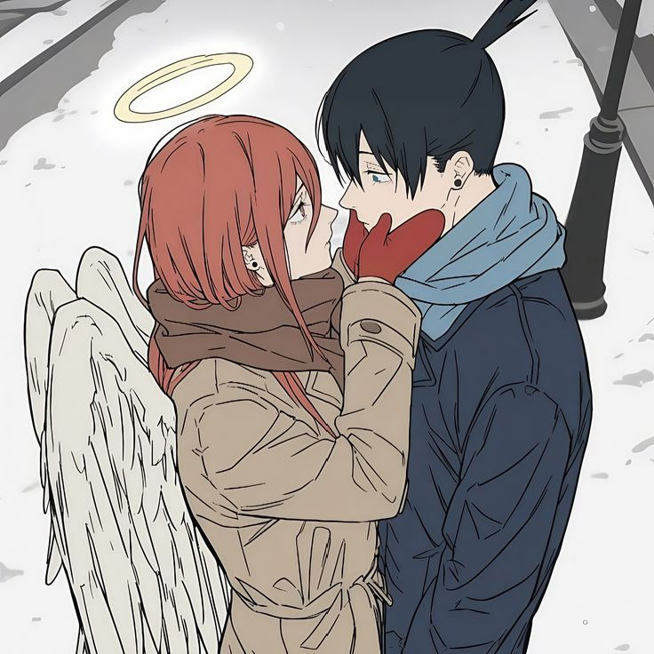
🌌 Chainsaw Man
Aki × Angel
[Somos esos porque, Así como Aki aprendió a cuidar y amar a alguien a quien al principio solo veía como herramienta, yo aprendí a confiar y a entregarme por completo a ti. Incluso si, con el simple roce de tu mano, pierda años de vida.]
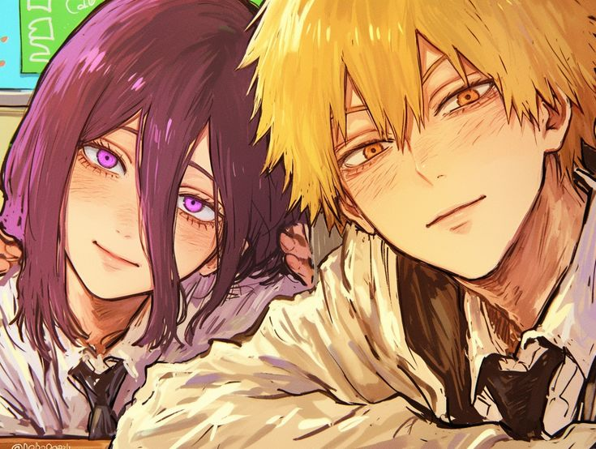
🌌 Chainsaw Man 2
Denji × Reze
[Somos esos porque al igual que Denji y Reze, nosotros también sufrimos con nuestro pasado, con nuestro caos. Y aún así, encontramos en el otro un momento de paz, de ternura. Me has enseñado como Reze que, por más duro que sea el destino, a veces una sola persona basta para cambiarlo todo.]
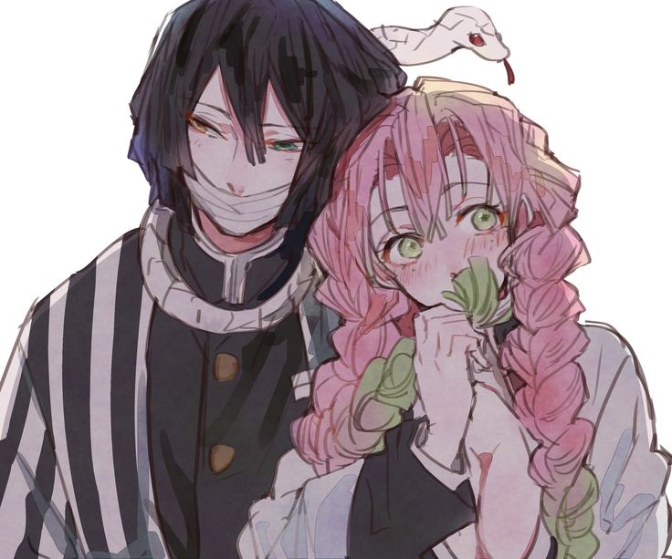
🌌 Kimetsu no Yaiba
Obanai × Mitsuri
[Somos esos porque, así como Obanai se sintió digno de amar gracias a Mitsuri, yo aprendí a aceptarme y a creer que merezco ser amado por ti. Tú miras mis cicatrices con la misma dulzura con la que ella miraba las de él, y me has hecho sentir normal, valioso y profundamente querido como nunca antes.]
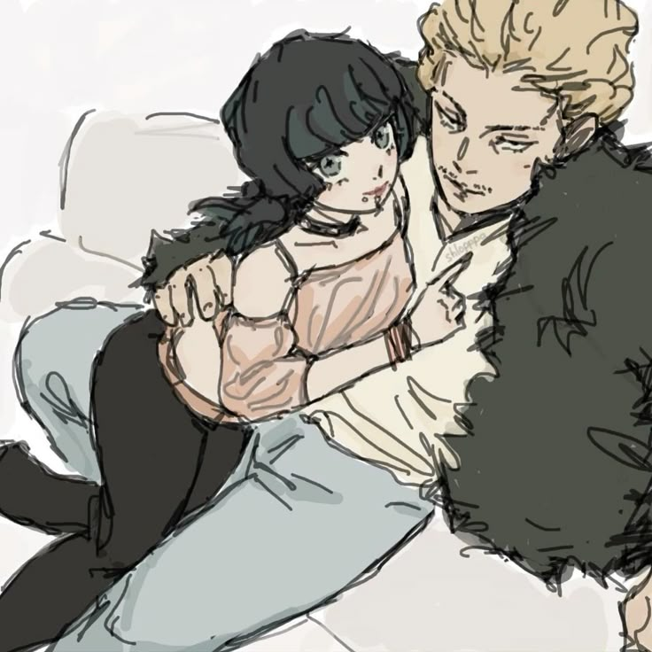
🌌 Jujutsu Kaisen 2
Kirara × Hakari
[Somos esos porque, igual que Kirara y Hakari se eligen y se acompañan sin importar lo que diga el resto del mundo, tú y yo nos elegimos cada día. Con tu “fiebre” constante me recordaste que el amor verdadero es lealtad, diversión y protección mutua… y que juntos siempre estamos en nuestro mejor momento.]
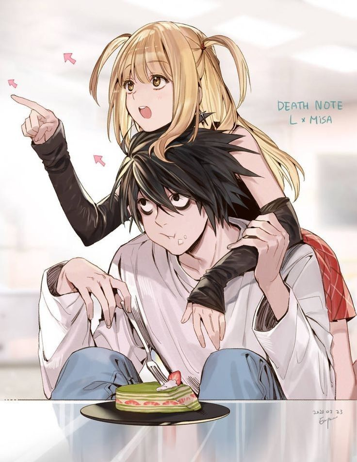
🌌 Death Note
L × Missa
[Somos esos porque, así como L encontró una conexión inesperada y genuina con Misa a pesar de lo diferentes que eran, yo encontré en ti a la persona que me saca de mi cabeza y me hace sentir de una forma que no sabía posible. Tú me diste algo que no buscaba, algo cálido y real, y me has demostrado que el amor puede nacer incluso en los lugares más improbables.]
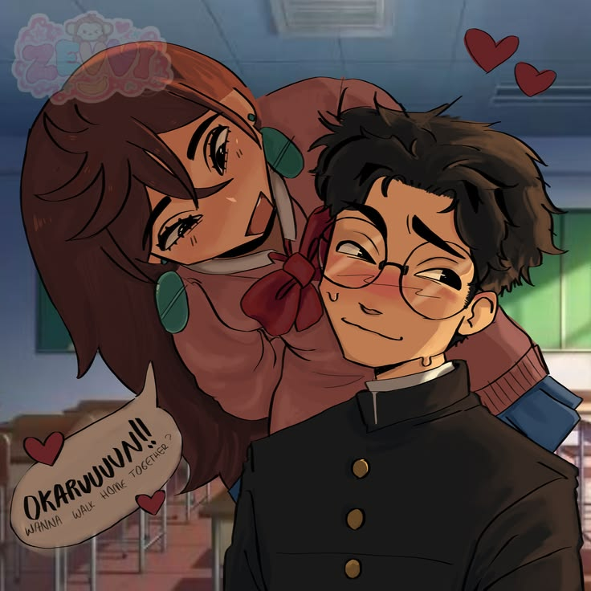
🌌 DanDaDan
Okarun × Momo
[Somos literalmente esos, no sé que mas buscabas leer aquí, Pendejo.... Nah mentira, somos esos porque, igual que Okarun y Momo se convirtieron en el refugio del otro mientras enfrentaban lo imposible, tú te convertiste en mi hogar en medio de todo. Aprendí a confiar, a pelear por alguien y a enamorarme de verdad gracias a ti… contigo, Mi mundo se llena de color]
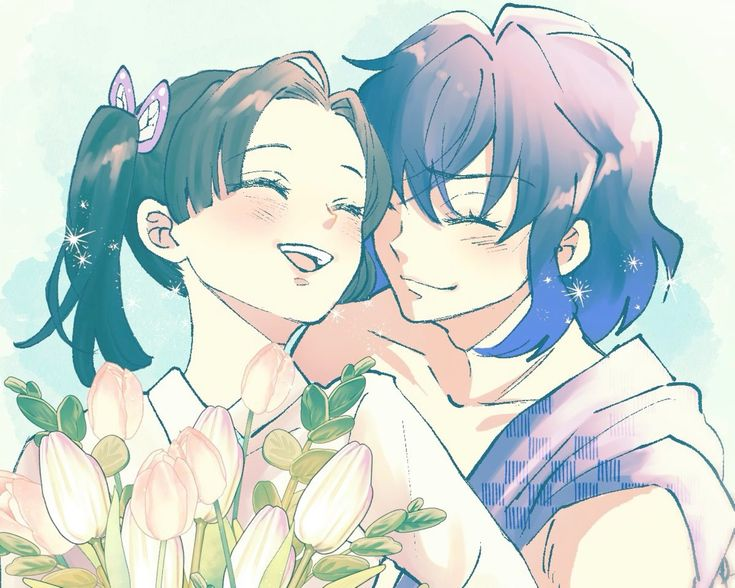
🌌 The Special One
Inosuke × Aoi
[Qué te puedo decir que no sepas ya de estos dos. Siempre fuimos ellos, estábamos destinados desde que entré al team y escogí a Inosuke. Como ambos sabemos, detrás de cada rol, de cada interacción que tenían, había un pedazo nuestro. Así que hubiera Sido pecado no incluirlo en esta lista. Porque tú eres la Aoi que domesticó a mi Inosuke...]
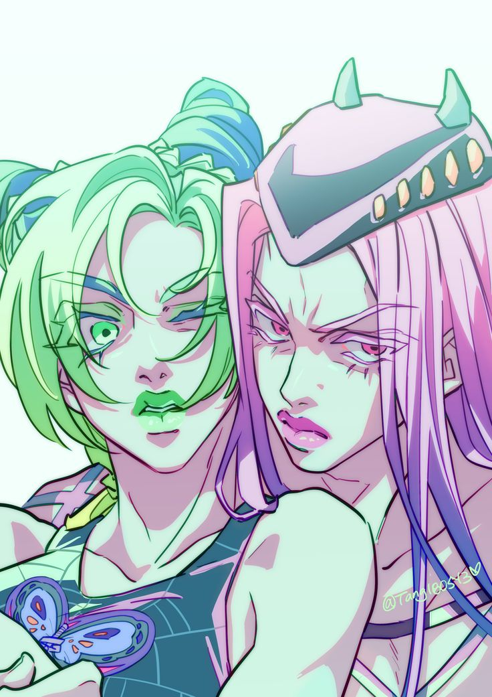
🌌 JoJo´ s Bizarre Adventure
Anasui × Jolyne
[Somos esos porque, así como Anasui encontró en Jolyne una razón para cambiar, a alguien cuyo amor fue tal que llegó a dar su vida por ella. Yo encontré en ti todo eso y más. Encontré el motivo para segui peleando por mi futuro, porque estás en él. Tu determinación, tu valor y tu forma de ser me purificaron, me dieron esperanza y una razón para seguir intentando ser digno de caminar a tu lado... por siempre.]
❤️ Para cuando quieras saber qué siento
No tengo ni idea de como decir esto. Porque no creo que exista una forma perfecta para explicar lo que siento por ti. Pero si sé que estos 3 meses, 13 semanas, 62 dias, 1488 horas, 89280 minutos, 5357340 segundos cambiaron toda mi vida, Me gusta tenerte aquí, me gusta hablar contigo, me gusta compartir mi vida a tu lado, me gusta saber que existe una persona a la que puedo contarle todo lo que me pase, que incluso en mis peores momentos, cuando no quiero saber nada. Ahí estas tu. No quiero escribir algo que suene perfecto, porque no existe tal cosa... O bueno, si existe y se llama Joshua Kael, Paula Janin, como gustes que te digan, porque estoy hablando de ti, MI Amor. Simplemente gracias por todo mi amor, te adoro demasiado. ♡📸 Mis fotos favoritas de mi artista favorito.
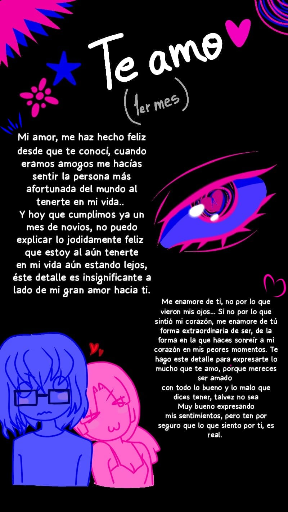
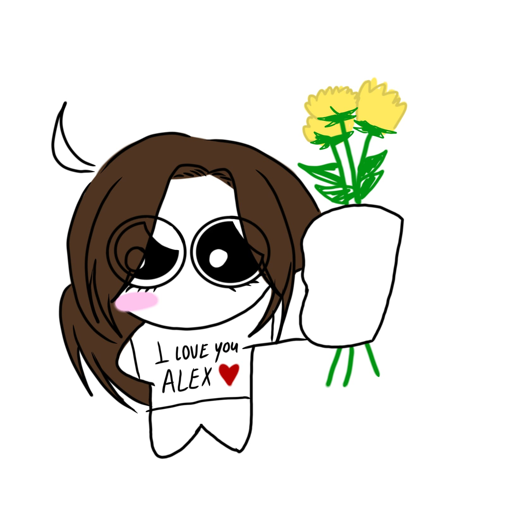
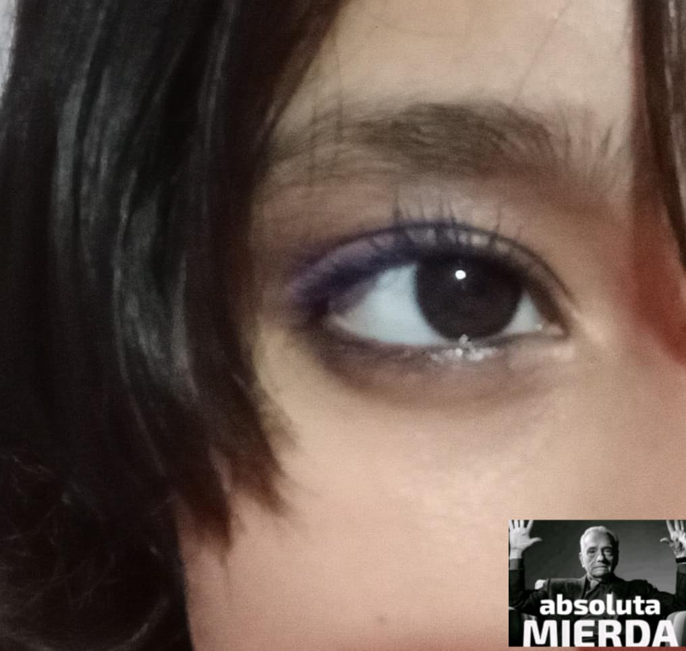
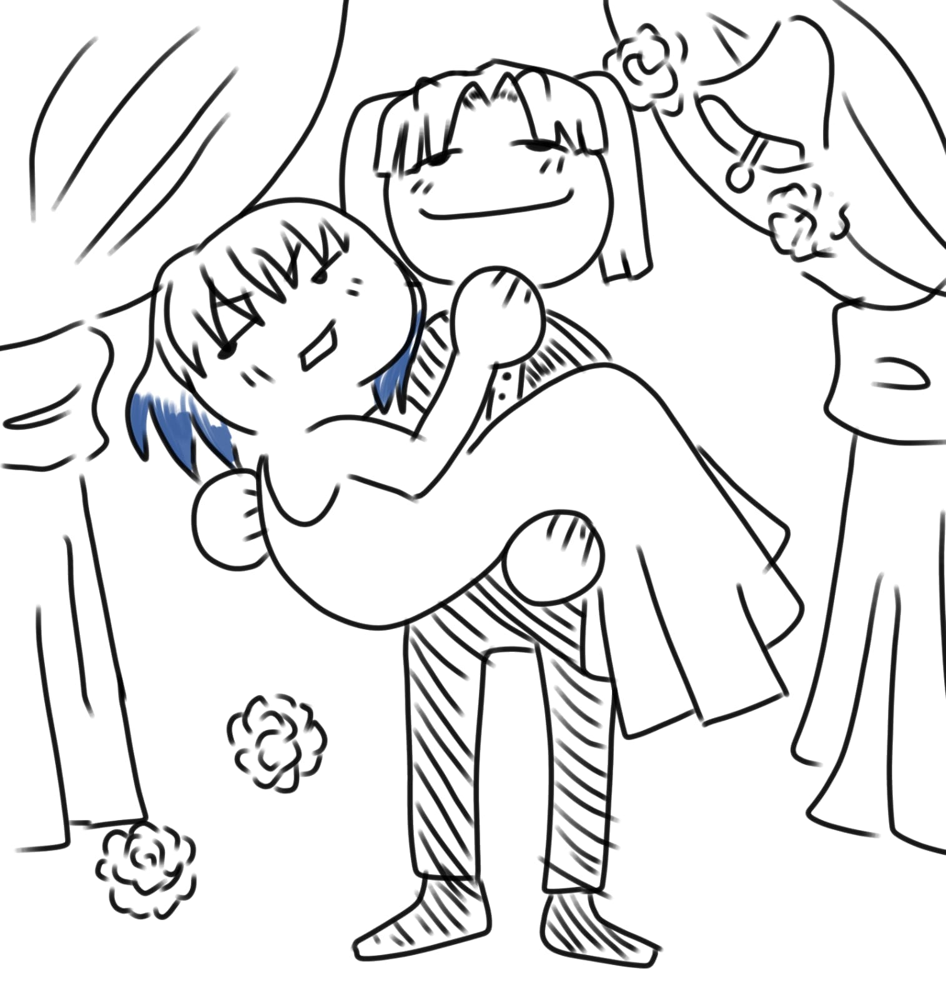
Una última cosa...